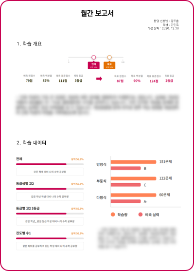
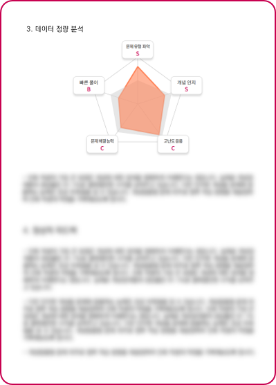

중/고등학교 시절, 수학 실력을 올리기 위해 그 누구보다 치열하게 고민해본 이 저희입니다.
강사 소개
장주훈
선생님
#열정적인 #성실한 #스파르타
선생님 경력
대구영남고등학교 졸업
포항공대 산업경영공학과 4학년 재학
3년 내내 수학 과목(내신/모의고사) 1등급 유지 (1,2학년 수학 모의고사 올 100점)
교육 경력
다수의 중등, 고등학생 과외 경험
수학 학원 강사 경험
대구시 달성군 그룹 교육 봉사 경험
청소년 공학/과학 교육 캠프 멘토링 경험 4회
학년군
선호 학년군 : 고등학교 1,2학년
가능 학년군 : 예비 중1 ~ 고3
박지원
선생님
#밀착관리 #친절한 #자기주도학습 #과학고
선생님 경력
전남과학고등학교 졸업
포항공과대학교 기계공학과 4학년 재학
포항공대, 카이스트, 지스트 동시 합격
교육 경력
다수의 중등, 고등학생 과외 경험
과학고 대비 중등 화상과외
포항시 양학지역아동센터 수학 교육 봉사
학년군
선호 학년군 : 중학생 전학년, 고등학교 1학년
가능 학년군 : 예비 중1~고2
왜 레플의 과외를 선택해야하나요?
레플의 과외는...
학원의 커리큘럼과 과외의 맞춤 학습을 한번에
튼튼한 수학 체력을 만들고 싶다면 매일매일 기록하세요
부족한 개념, 자주 틀리는 문제 유형을 데이터로 알기 쉽게
분석된 데이터로 최적의 학습 과정을 설계
부모님도, 학생도 알기 쉽게 보여드려요 :)
검증된 강사의 진로/진학/입시/멘토링
레플의 차별화된 ‘데이터 코칭 시스템’
‘1:1 밀착 교육’이라는 과외의 특성과 ‘데이터 분석＇을 전문으로 하고 있는 공대생 선생님들의 특성을 접목시켜 데이터를 통한 밀착 코칭을 실현했습니다.
학생의 학습 내용 및 현황을 수치화된 데이터로 도출하여, Daily, Weekly, Monthly에 따라 각기 다른 형태로 ‘데이터 코칭＇을 진행합니다.
DAILY
데일리 학습 체크
하루를 마무리하며 매일 공부한 학습 내용을 사진 형태로 선생님에게 전송합니다.
학생의 학습 내용을 ‘데이터 매니저＇선생님께서 면밀히 분석하여, 데일리 학습 대시보드 형태로 학생과 부모님께 매일 공유 드립니다.
단원별/유형별 분석, 문항별 세부 분석을 통해 학생이 공부한 내용을 매일 점검합니다.
이를 통해 학생의 공부 방향성을 바로잡고 자기주도적 학습 역량을 함양 시킵니다.
WEEKLY
위클리 학습 레포트
데일리 학습 데이터를 정리 및 분석하여 매월 둘째 주에 학습 레포트를 학생과 학부모님께 공유 드립니다.
2주 동안 쌓인 데이터를 활용하여 학습 추이 분석, 유형 분석, 취약점 분석 등을 진행합니다.
단원별/유형별 분석, 문항별 세부 분석을 통해 학생이 공부한 내용을 매일 점검합니다.
MONTHLY


정기 학습 레포트
한달 동안 수집된 학습 데이터와 현장 교육 결과를 종합하여 매월 마지막 주에 정기 학습 레포트를 작성합니다.
‘목표 대비 달성 수준 분석’ 및 ‘학습 현황 분석＇을 통해 전반적인 학습 상태를 점검하고, 필요시 목표 재설정을 진행합니다.


#열정적인 #성실한 #스파르타